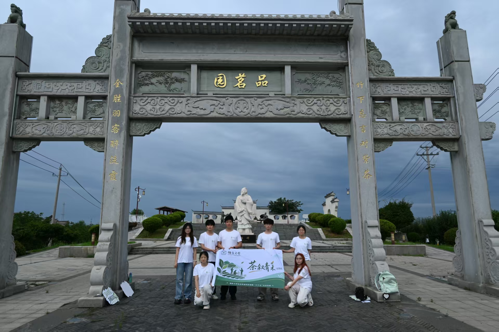
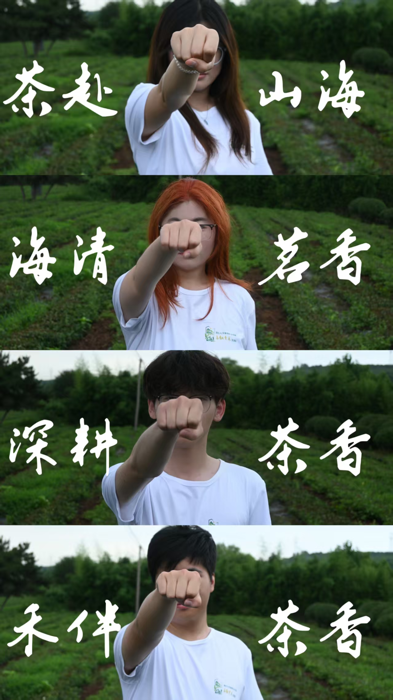
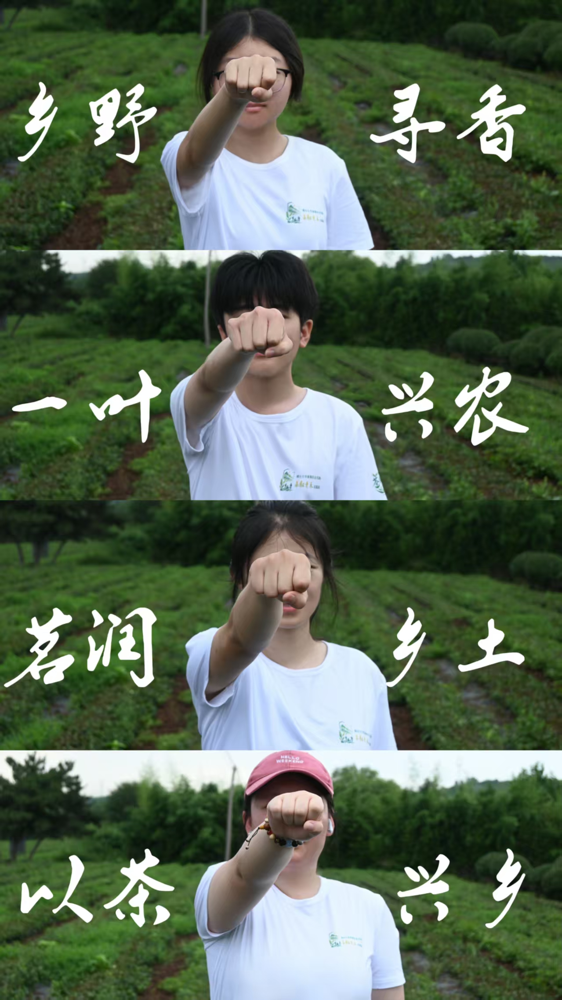

01 / LEAD COORDINATOR
投资学 · 统筹官
许小慧
作为团队统筹者，许小慧负责把实践目标拆解为可以执行的任务，并协调调研、宣传、设计与资料整理等不同环节。
在对外工作中，主要承担茶企沟通与行程衔接；在团队内部，则持续跟进分工、进度和成果汇总，保证各条工作线围绕同一实践主题推进。
- 实践计划与任务统筹
- 茶企、实践点沟通衔接
- 团队分工与成果汇总
MEET THE FIELD TEAM · 11 MEMBERS
团队由投资学、建筑学与会计学学生组成。点击成员姓名，可切换查看每个人在本次社会实践中的具体分工。

TEAM DIRECTORY
这里不再把11个人全部纵向堆叠。成员目录用于选择，详情区只显示当前选中的具体介绍。
投资学 · 统筹官
作为团队统筹者，许小慧负责把实践目标拆解为可以执行的任务，并协调调研、宣传、设计与资料整理等不同环节。
在对外工作中，主要承担茶企沟通与行程衔接；在团队内部，则持续跟进分工、进度和成果汇总，保证各条工作线围绕同一实践主题推进。
投资学 · 策划员
池岸青承担实践策划案的撰写与结构梳理，把团队关于海青茶调研、文化传播和助农实践的想法整理为清晰方案。
这项工作连接前期准备与现场行动：既要明确阶段目标，也要考虑人员安排、活动形式与最终成果，使每次走访都有可追踪的重点。
建筑学 · 团貌设计师
沈鸣盛负责团队视觉识别的主要设计工作，将茶园、青年行动与烟台大学团队身份转化为统一的图形语言。
队旗、队服与文创物料既服务现场使用，也让实践队在拍摄、活动和对外传播中保持清晰一致的形象。
投资学 · 茶韵宣传官
杨百合参与公众号内容运营与文章策划，负责把现场走访、访谈信息和团队感悟整理成适合公众阅读的传播内容。
工作重点是从大量记录中提炼主题，让实践文章既保留真实细节，也能清楚说明海青茶的文化与产业价值。
投资学 · 推文运营官
任文静参与公众号运营、推文策划与资料组织，将不同阶段的实践内容转化为连贯的文章结构。
从现场信息筛选到文字编排，这项工作帮助团队建立持续的内容记录，也为网站中的实践纪实提供了重要底稿。
投资学 · 茶趣流量师
王玉淼负责平台运营相关工作，思考如何把实践现场与海青茶内容转化为更适合线上传播的素材。
其分工关注内容发布、受众触达与传播节奏，让团队产出的文章、影像和视觉成果能够进入更广泛的公众视野。
投资学 · 茶园记录官
蒋安琪承担实践过程中的拍摄与剪辑，用影像记录茶园环境、制茶过程、企业交流和团队行动。
这些照片与视频不仅是活动留痕，也是后续推文、网站和视觉成果的基础素材，让叙述始终有真实现场作为支撑。
建筑学 · 文创筑造者
张健锋参与团队的设计与策划工作，将调研中获得的茶文化信息转化为具有具体使用场景的文创表达。
其工作连接内容与形式：一方面理解实践主题，另一方面关注图形、版式和物料在真实活动中的呈现效果。
建筑学 · 茶韵创意师
胡振楠参与视觉创意与文稿整理，在图像表达和文字内容之间建立衔接。
通过梳理主题、辅助设计与整理材料，使茶文化内容能够更准确地进入海报、文创和展示页面，而不是停留在零散素材中。
会计学 · 茶事PPT匠人
王廷玉负责团队汇报材料的制作与视觉美化，把调研过程、实践成果和核心数据整理成便于展示的演示文稿。
这项工作需要在信息完整与版面清晰之间取得平衡，让老师、评委与公众能够快速理解项目逻辑。
会计学 · 茶情调研师
吕树通承担问卷设计与实践报告相关工作，帮助团队把观察和访谈转化为更有结构的调研信息。
通过整理问题、汇总反馈并参与报告撰写，使团队对海青茶受众认知、产业现状和传播需求的判断更有依据。


